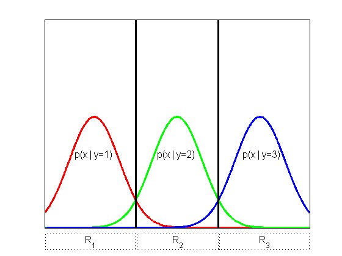

Illustration of decision regions for the 3 class case
domain = -3:0.01:13;
sigma = 1.5.^2;
r1 = gaussProb(domain, 0, sigma);
r2 = gaussProb(domain, 5, sigma);
r3 = gaussProb(domain, 10, sigma);
linesize = {'LineWidth',2.5};
plot(domain,r1,'-r',linesize{:});
hold on;
plot(domain,r2,'-g',linesize{:});
plot(domain,r3,'-b',linesize{:});
axis([-3,13,0.015,1]);
set(gca,'XTick',[],'YTick',[])
plot([2.5;2.5],[0;0.5],'-k',linesize{:});
plot([7.5;7.5],[0;0.5],'-k',linesize{:});
annotation(gcf,'textbox',[0.20 0.35 0.1472 0.07709],...
'String',{'p(x | y=1)'},...
'HorizontalAlignment','center',...
'FontSize',12,...
'FitBoxToText','off',...
'LineStyle','none');
annotation(gcf,'textbox',[0.44 0.35 0.1472 0.07709],...
'String',{'p(x | y=2)'},...
'HorizontalAlignment','center',...
'FontSize',12,...
'FitBoxToText','off',...
'LineStyle','none');
annotation(gcf,'textbox',[0.69 0.35 0.1472 0.07709],...
'String',{'p(x | y=3)'},...
'HorizontalAlignment','center',...
'FontSize',12,...
'FitBoxToText','off',...
'LineStyle','none');
annotation(gcf,'textbox',[0.132 0.025 0.264 0.06388],...
'String',{'R_1'},...
'HorizontalAlignment','center',...
'VerticalAlignment','middle',...
'FontSize',12,...
'FitBoxToText','off',...
'LineStyle',':');
annotation(gcf,'textbox',[0.399775 0.025 0.238 0.06388],...
'String',{'R_2'},...
'HorizontalAlignment','center',...
'VerticalAlignment','middle',...
'FontSize',12,...
'FitBoxToText','off',...
'LineStyle',':');
annotation(gcf,'textbox',[0.64125 0.025 0.264 0.06388],...
'String',{'R_3'},...
'HorizontalAlignment','center',...
'VerticalAlignment','middle',...
'FontSize',12,...
'FitBoxToText','off',...
'LineStyle',':');
axis tight;
